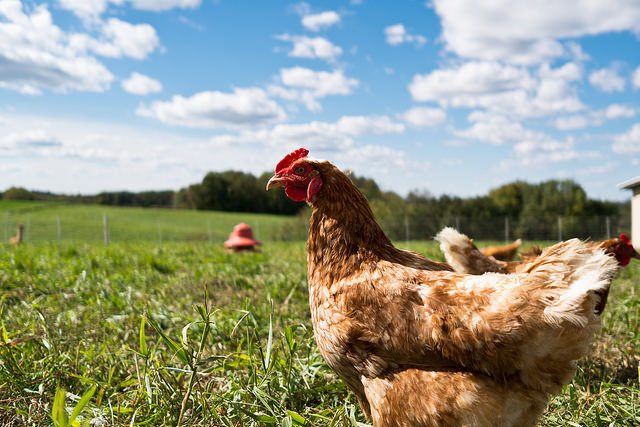

UK Environment Secretary opens the data floodgates
 A strong UK community is emerging around open food, environment and agriculture data. CC BY 2.0, uploaded by Phil Roeder.
“I believe the countries that succeed are the ones that give space for people to take the initiative and create the ideas that bring profit and progress.” Environment Secretary Liz Truss
Last week, Environment Secretary Liz Truss launched a new era for the Department of Environment, Food & Rural Affairs: #opendefra. Over the next 12 months, Defra will be making thousands of datasets available as open data to support new businesses, invite community-driven innovation and make UK food and farming more competitive than ever.
The Environment Secretary is intent on tapping into the economic potential in open food, agriculture and environment data, the fruits of which are already being harvested. The Climate Corporation, which began as a startup using open weather data to provide weather insurance to farmers, was acquired by Monsanto for $1.1bn USD in 2013. Satellite imagery, such as NASA’s Landsat – which has been capturing satellite imagery since the 1970s – was valued in 2013 as being worth as much as $8.8 bn USD per year.
UK innovation with Defra data
In the UK a strong community has already begun to emerge around open food, environment and agriculture data, for a range of uses. 2014 Open Data Award Winner Shoothill uses raw environmental data to deliver insights for businesses, government and civil society organisations. Gauge Map – an invaluable interactive map for asset management – provides updates on river level, flow and groundwater data across England and Wales. Another 2014 Open Data Award winner, Plantwise, helps farmers lose less of what they grow to crop pests and diseases. And one of this year’s Open Data Award finalists, the Oxford Consultants for Social Inclusion (OCSI) has used open data to help rural organisations and public sector bodies better understand and map rural exclusion.
The Environment Agency has been investing in open data for over a year. Recently, it announced that LIDAR (Light Detection and Ranging) data will be released as open data in September 2015. LIDAR data covers nearly three quarters of England, mainly floodplains, coastal zones and urban areas. LIDAR data has significant value for creating flood models, assessing coastal change and analysing how land is used.
Among the Open Data Institute (ODI) Startups, a number work with food and environment data. FoodTrade helps small restaurants and caterers create menus with up-to-date allergen information, to ease compliance with Food Standards Agency regulations. While still less than a year old, FoodTrade has attracted press in the Financial Times, Wired and the Huffington Post and secured support from companies including Telefonica and British Growers.
Another ODI Startup Enian uses a range of data, including open environmental data, to automate impact and risk calculations for clients across a range of sectors. Resurgence uses open data to help cities mitigate urban risks and build resilience, with a particular focus on climate-related risks like water stress and flooding.
Beyond the publication of data: making open data sustainable
Defra’s open data plans should see innovation with food, environmental and agriculture data accelerate further. Key to this will be ensuring that beyond the publication of thousands of datasets as open data in the next 12 months, that Defra’s efforts are sustainable.
The 2015 ODI report 'Open data means business' looked at 270 companies with a combined turnover of £92bn using, producing or investing in open data as part of their business. Of these companies, several reported issues around open data being published as a ‘one off’ that prevented them from relying on the data to build a sustainable business model.
The biggest issue [with open data] is someone could just stop providing a dataset. That's the biggest problem. So if someone comes awry or it just gets taken away, I can't end up forcing them to release datasets, that's the biggest problem. If I was to [make] a Freedom of Information request, that would be a one-off and within a few weeks would pretty much become useless to people. (Clifford McDowell, Doorda)
Part of mitigating this risk is coupling the release of open data with a longer-term open data strategy, and Defra has already begun this journey. Together with the ODI, Defra has been working on developing an Open Data Maturity Model to help organisations assess how effectively they publish and consume open data. The Maturity Model formed the basis for an online assessment tool, Open Data Pathway, for organisations to map their open data progress and compare it with other organisations. In a blog accompanying the Environment Secretary’s #opendefra announcement, Defra’s data lead Alex Coley announced the setup of an accelerator project to continue to build on the open data work.
How can the business and open data communities help?
As Defra works out how best to meet the Environment Secretary’s open data challenge, talking to businesses, startups, public sector bodies and experts who are using or could be using their data will help understand potential benefits and prioritise data for use. The Environment Agency has one potential model to expand on.
The Environment Agency (EA), who is in the process of transitioning from a charged-for data model to a fully open one, set up an Advisory Group on Open Data (EADAG) to help them communicate with open data users. EADAG, comprising open data experts, businesses, researchers, community organisations and local government representatives, has helped EA to prioritise data for release and grow a community around its data, which is often very valuable.
Defra has an exciting and challenging 12 months ahead. It’ll need the support of the wider food, agriculture and environment community who could make use of and build on its data. It would be fantastic to know what other organisations are doing with agriculture data, for example, and where they could see potential open data use cases for Defra’s data.
The ODI is keen to surface some of these stories over the course of Defra’s journey. Send us yours to [email protected] or tweet us at @ODIHQ.
This article first appeared on Government Computing.
Ellen Broad is Policy Lead at the ODI. Follow @EllenBroad on Twitter.